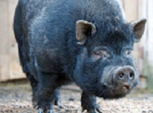
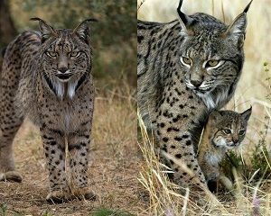

Дикие животные
Список животных
Бурый медведь (или обыкновенный медведь) — млекопитающее семейства медвежьих;
один из самых крупных наземных хищников и один из самых распространённых представителей семейства медвежьих.
Сейчас бурый медведь продолжает восстанавливать популяцию на большей части ареала; в остальных областях малочислен. В Западной Европе его разобщённые популяции сохранились на Пиренеях, Кантабрийских горах, Альпах и Апеннинах. Довольно распространён в Скандинавии и Финляндии, встречается в лесах Центральной Европы и в Карпатах. В Финляндии бурый медведь объявлен национальным животным.
Бурый медведь внесён в Красную книгу МСОП со статусом «вид, находящийся под угрозой», однако его численность сильно разнится от популяции к популяции. Наибольшая популяция обитает в России — свыше 300 000 особей, в США — 32 500(95 % живёт на Аляске) и Канаде — 21 750. В Европе сохранилось около 14 000 особей. К 2001 году в европейской части России популяция бурого медведя увеличилась и с тех пор постоянно растёт, в то время как на Кавказе и в Средней Азии напротив, численность уменьшилась.
 КабанКабан (или вепрь) — парнокопытное млекопитающее из рода кабанов семейства свиных. Является предком домашней свиньи.
Кабан — всеядное парнокопытное нежвачное млекопитающее из рода кабанов. Отличается от домашней свиньи, которая несомненно произошла от кабана (и других близких видов), обладает более коротким и плотным телом, более толстыми и высокими ногами; кроме того, голова у кабана длиннее и тоньше, уши длиннее, острее и притом стоячие. Постоянно растущие верхние и нижние клыки, торчащие изо рта вверх, у самца гораздо более развиты, чем у самки.
Ареал кабанов самый широкий среди всего семейства свиней и один из широчайших среди наземных млекопитающих. Дикие кабаны водятся в широколиственных (буковых и дубовых) и смешанных лесах материковой Средней Европы (от Атлантики до Урала); в Средиземноморье, включая также отдельные районы Северной Африки, в том числе горы Атлас и Киренаику (в древности его ареал доходил вдоль долины Нила до Хартума на юге).
 РысьРыси — род хищных млекопитающих семейства кошачьих, наиболее близкий к роду кошек.
Рысь — типичная кошка, хотя величиной с крупную собаку, которую отчасти напоминает своим укороченным телом и длинноногостью. Очень характерна голова рыси: сравнительно небольшая, округлая и очень выразительная. Рост обычной рыси достигает 55 см, канадской от 48 см до 56 см, а пиренейской — от 60 до 70 см. От других кошачьих рыси отличаются коротким хвостом и кисточками на концах ушей. Масса тела рыси от 10 до 20 кг.
В скандинавской традиции рысь была священным животным богини Фрейи. Считалось, что рыси впряжены в её колесницу, но на самом деле это были кошки породы Норвежская лесная, похожие на рысь, или их предки лесные коты, чей ареал достигал Ютландии и Шотландии. Древние греки верили, что острый взор рыси способен пронзать насквозь непрозрачные предметы.